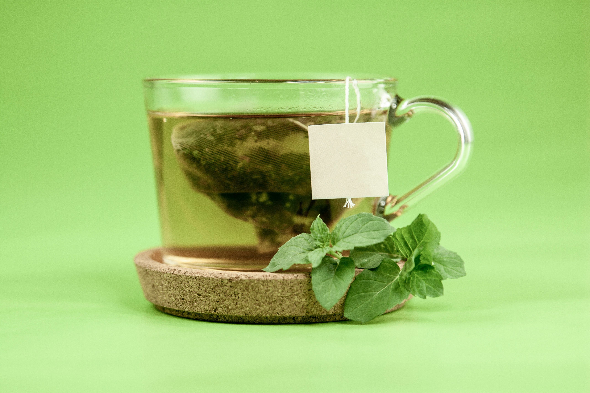
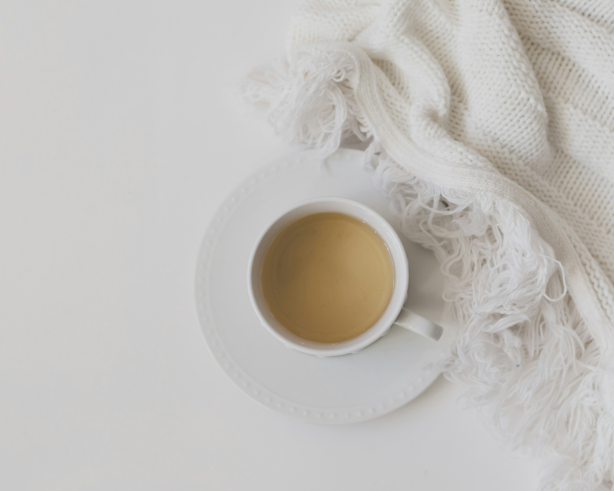
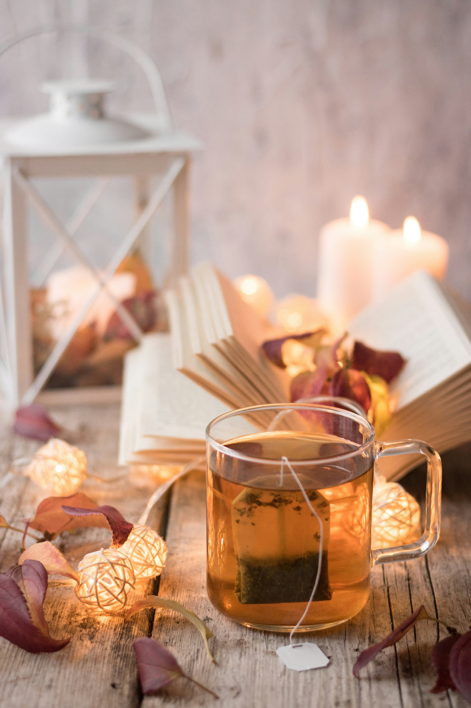
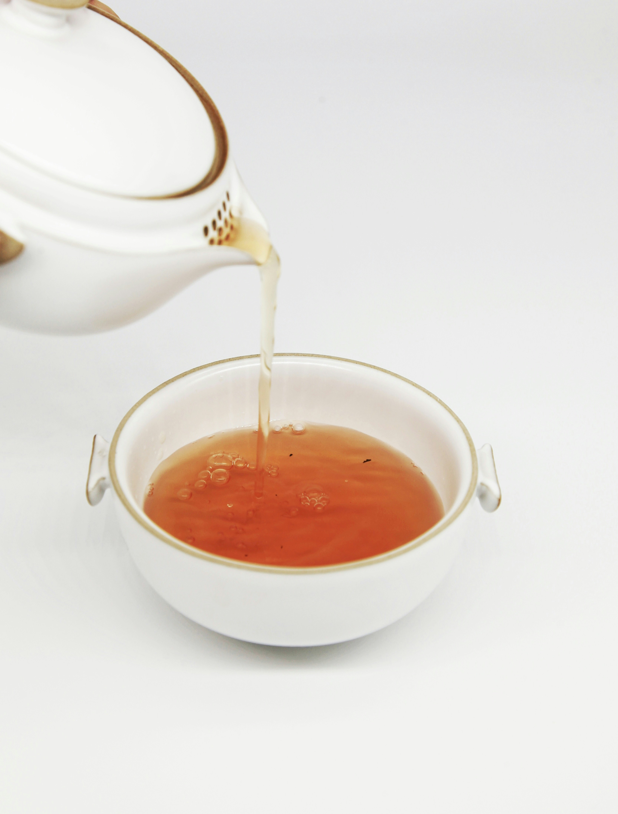

From delicate green teas to comforting herbal blends,
follow our simple guides to bring out the best flavour
in every infusion.

1. Green Tea
Light, fresh and delicate, green tea is best brewed
gently to preserve its natural flavour without
developing bitterness.
- Water temperature: 70–80°C
- Tea quantity: 1 teaspoon per cup
- Steeping time: 2–3 minutes
- Flavour: Fresh and grassy
Brewing tip:
Avoid boiling water. Slightly cooler water helps
keep green tea smooth and refreshing.
2. Black Tea
Bold, rich and full-bodied, black tea is a wonderful
choice for a morning boost or a relaxing afternoon
tea break.
- Water temperature: 95–100°C
- Tea quantity: 1 teaspoon per cup
- Steeping time: 3–5 minutes
- Flavour: Rich and robust
Brewing tip:
Add milk, lemon or honey if you enjoy a different
flavour profile. Taste before adding anything.

3. White Tea
Delicate and subtly sweet, white tea deserves a
gentle brewing method that allows its light,
floral character to shine.
- Water temperature: 75–85°C
- Tea quantity: 1–2 teaspoons per cup
- Steeping time: 3–5 minutes
- Flavour: Soft and floral
Brewing tip:
Use fresh-tasting water and allow the tea to steep
patiently for a gentle, aromatic cup.

4. Herbal Tea
Enjoy the comforting aromas of ingredients such as
peppermint, chamomile, ginger and dried fruit.
Herbal infusions are naturally varied in flavour.
- Water temperature: 95–100°C
- Tea quantity: Follow package directions
- Steeping time: 5–7 minutes
- Flavour: Floral, fruity or refreshing
Brewing tip:
Cover your cup while steeping to help retain the
infusion's delicate aromas. Follow the blend's
packaging for the best results.

5. Oolong Tea
Smooth, aromatic and beautifully balanced, oolong tea
sits between green and black tea. Its flavour can range
from light and floral to rich and toasty, depending on
how the leaves are processed.
- Water temperature: 85–95°C
- Tea quantity: 1–2 teaspoons per cup
- Steeping time: 3–5 minutes
- Flavour: Floral, fruity or toasty
Brewing tip:
Experiment with different steeping times to discover
your preferred flavour. Oolong tea leaves can often
be steeped multiple times, revealing new aromas
with each infusion.